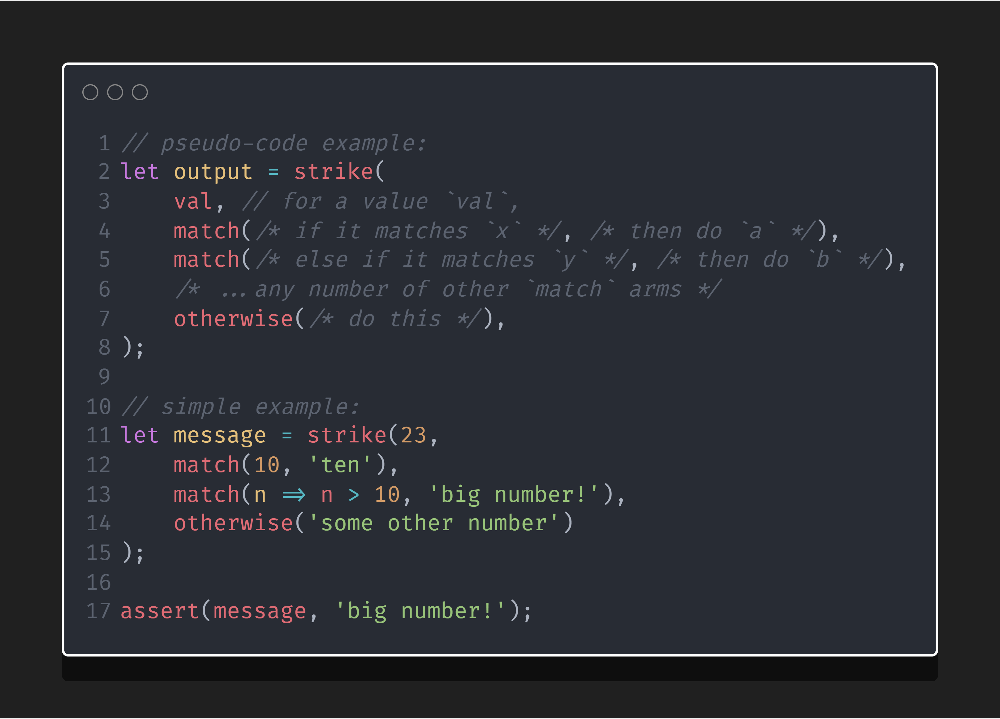
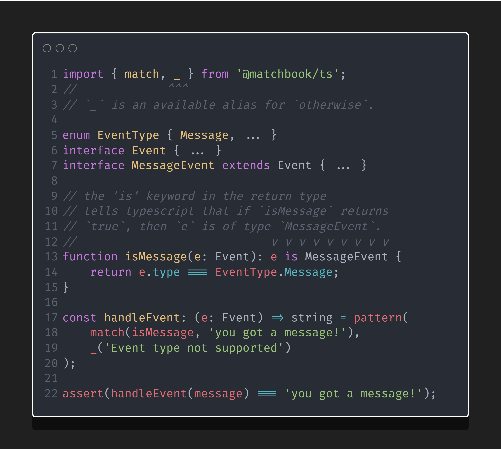

🔥 matchbook
pattern matching in typescript & javascript made easy
matchbook is a lightweight & easy to use pattern matching library, for TypeScript and JavaScript.
If you want to know more about matchbook, check out the docs or read on!
If you want to start using matchbook, install it like any other npm package:
npm i @matchbook/ts


table of contents
what matchbook does for you
(list is in no particular order)
- expressive - pattern matching helps you write less code that's more expressive than if/else trees
- simple - API is just 5 functions, 1 error class, and some stylistic aliases for the core functions
- powerful - type inference backed by Typescript
- well documented - check out the docs here!
- low cost - no runtime dependencies, & small package size
- reliable - 100% unit test coverage, with all pushes verified via Travis CI
what you can do for matchbook
use it!
The project is currently in beta, meaning the functionality & API are complete &
fully covered by tests, but the library hasn't been battle-tested and may need
some final tweaks before v1.0.0.
watch it!
Watch the project for releases to be notified of cool new features, and the v1.0.0 release!
ask questions!
If you have any questions, any feedback, or just want to shoot the shirt,
open an issue of type question, and we'll do our best to answer quickly!
pattern matching explained
Pattern matching is a modern language feature that is similar to a switch / case statement.
With pattern matching, you can switch on the type of the incoming value, meaning you can reduce a lot of extra-verbose if-else branches just by replacing them with pattern matching statements.
You might consider using pattern matching if you find you're switching on types or states frequently, and want to handle the different cases in a concise and expressive way.
This project takes heavy inspiration from Rust's pattern matching idiom.
matchbook at a glance
want to know more? read the docs! 
matchbook at a slightly longer glance
want to know more? read the docs!
switching on part of an object
switching on an enum
acting on the type of an Event
